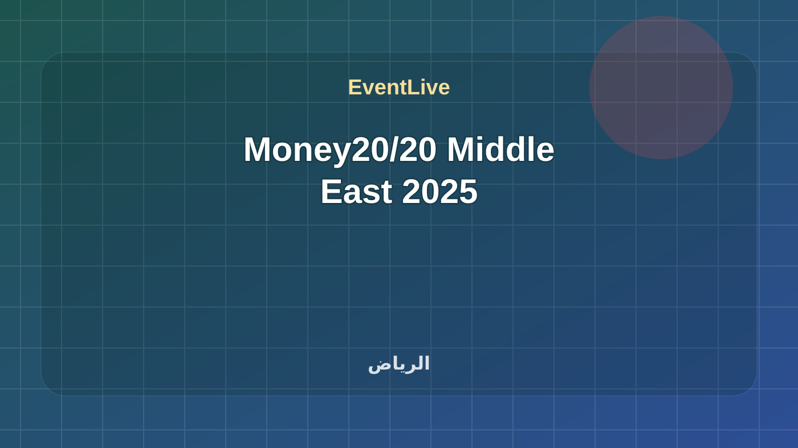

منتهية · فعالية
Money20/20 Middle East 2025
النسخة الافتتاحية من Money20/20 Middle East في الرياض، محفوظة ببرنامجها الرسمي الكامل للجلسات والمتحدثين والقاعات. Money20/20 Middle East 2025 ضمن مؤتمرات ومنتديات في الرياض. تبدأ الفعالية ١٤/٠٩/٢٠٢٥، ٣:٠٠ م وتنتهي ١٧/٠٩/٢٠٢٥، ٧:٠٠ م حسب البيانات المتاحة. تتوفر لها صفحة جدول حي تساعد الزائر على متابعة الحالة والوقت أثناء الحضور. المصدر: Money20/20 Middle East Official.
المدينةالرياض
البداية١٤/٠٩/٢٠٢٥، ٣:٠٠ م
النهاية١٧/٠٩/٢٠٢٥، ٧:٠٠ م
الحالة الحيةجاري حساب الوقت...
8/8
جاهزوقت واضح
جاهزمصدر موثوق · مصدر معتمد
جاهزمدينة محددة
جاهزموقع قابل للوصول
جاهزأجندة متعددة الجلسات
جاهزرابط مشاركة
جاهزتصنيف مفهوم
جاهزجمهور مناسب
ما يحتاجه الزائر بسرعة
متى تبدأ Money20/20 Middle East 2025؟
تبدأ Money20/20 Middle East 2025 في ١٤/٠٩/٢٠٢٥، ٣:٠٠ م وتنتهي في ١٧/٠٩/٢٠٢٥، ٧:٠٠ م بتوقيت السعودية.
أين تقام Money20/20 Middle East 2025؟
تقام الفعالية في الرياض، Riyadh Exhibition & Convention Center, Malham.
هل المعلومات موثوقة؟
تعتمد EventLive على Money20/20 Middle East Official أو رابط دليل ظاهر في صفحة الفعالية، مع إبقاء رابط المصدر للمراجعة.
هل يوجد جدول حي لهذه الفعالية؟
نعم، تعرض الصفحة جدولًا حيًا أو جلسات قابلة للمتابعة حسب الوقت.
برنامج موثق
الجدول الحي
242 جلسة · 11 قاعات · بتوقيت الرياض
يجري الآنلا توجد جلسة جارية الآن
التالييُحدد حسب الوقت الفعلي
242 جلسة
Fintech Strategy and Capital Market Growth
Fahad Bin Hamdan
Keynote : Launch of the Annual Fintech Report
Yazeed A. Alnafjan, CFA
Panel Discussion : Fintech Investment Growth in MENA
Seena Amidi، Amal DOKHAN، Dalia Kamar
Networking Event : Matchmaking Meetings
Fintech Fusion Networking Mixer
Live Stream : Livestream Executive Summit Stage - Day 1
Keynote : Strategic Vision and Priorities
H.E. Mohammed A. Aljadaan
Keynote : Keynote Speech
H.E. Ayman M. Al-Sayari
Announcements
Fireside Chat : Capital Market Evolution in the Digital Age
H.E. Mohammed A. Elkuwaiz، Dr. Chris Brummer
Keynote : Unlocking Inclusive Growth through Global Payment Interoperability
Douglas Feagin
Panel Discussion : Global Xchange: The Great Fintech Reroute: Is the Global Financial Future Being Built Outside the West
Ahmad Ghandour، Jeff Parker، Simon Black، Kabeer Paliwalla
Keynote : The Role of the Regulator towards a Fintech-Driven Economy
H.E. Dr. Khaled W. Al-Dhaher، Leda Glyptis
Podcast : Everything is Fintech
Micky Tesfaye، Mounir Nakhla، Tracey Davies
Fireside Chat : The Digital Infrastructure of Capital: How Institutions Are Rebuilding Treasury, FX, and Portfolio Strategies for a Tokenized Economy
Charles-Henry Monchau، Abbas Hashmi، Tony Ashraf، Rayan Altuwayjiri
Panel Discussion : Fraud Has Evolved. Can The AI Defense Line Hold?
Toby Rush، Simon Taylor، Khaled Al Huneidi، Samrah Kazmi، Mohammed Alharrah
Panel Discussion : The Untold Stories: Redefining Venture and Innovation in Fintech
Ashley Lewis، Halah Al-Jubeir، Rezso Szabo، Basmah Alsinaidi، Kristy Duncan، Amal DOKHAN
Keynote : The Future Insured: Strategic Insurance Evolution in a Dynamic Financial Landscape
Eng. Abdullah Taha
Fireside Chat : In Conversation with: Digital Assets and State Capital: How Governments and Sovereign Institutions Are Shaping the Next Financial Frontier
Joseph HL Chan، Abbas Hashmi
Panel Discussion : The Post-Wallet Era: What’s Shaping the Future of Payments in the Middle East
Rinat Ablet، Eric Lin، Ali Bailoun، Deniz Oran، Ahmad S. Alrasheed، Pratik Sawal
Announcements
Fireside Chat : Who Is Finance Really Built For?
Nicole Valentine، Ayman Essawy، Omar Saleh، Nataliya Gorbunosova
Fireside Chat : Synergy Over Capital: Building Lasting Investor-Founder Bonds
Ravishankar GV، Sarah AlSaleh، Bilal Abou Diab
Presentation : East to West – A Global Pulse Check
Chris Skinner
Keynote : Unlocking Trust in Digital Assets: Building a Regulatory Framework that Enables Innovation
Eduard Muller
Fireside Chat : Instability as a Catalyst - Fintech’s Role in a Global Interconnected Economy
Hon. Caroline D. Pham، Deemah AlYahya، Scarlett Sieber، Dr. Doris Uzoka-Anite
Podcast : Fintech Files by BCG Platinion
Annika Melchert، Amanda Estiverne-Colas
Networking : Dr. Leda Glyptis - Book Signing / Networking Session
Leda Glyptis
Debate : Capital Crossroads: When Should Fintechs Choose Equity, Debt or Credit
Fariha Ansari Javed، Cindy Xu، Ihsan Jawad، Mohamed Aladdin، Tarek Fahim
Regional Insights : The Transformation Economy: Lending at the Core of Vision 2030
L Guru Raghavendran
Panel Discussion : Navigating the New Frontier: AI Regulation and the Open Banking Revolution
Colin Payne، Mohamed Nour، Kazimierz Kelles-Krauz، Nilixa Devlukia، Patrick Firth، Mansour A. Alsaleh
Panel Discussion : Global Xchange: Unlocking Trillions: Public-Private Partnerships as Catalysts for Emerging Market Growth
Folajimi Daodu، H.E. Dr. Vin Pheakdey، Kashifu Inuwa Abdullahi، Olugbenga Agboola
Presentation : From Insight to Impact: Agentic AI that Drives Real Results in Finance
Tomas Skoumal
Keynote : Reimagining Global Energy in a Digital Financial Future
Ziad Thamer Al-Murshed
Panel Discussion : Surviving the First Three Years: Capital, Chaos, and the Founder’s Battlefield
Omar Al-Shabaan، Yazeed Al-Shamsi، Baraa Koshak
Fireside Chat : Secondaries, Safe Bets or Short-Sighted? A VC's Dilemma
Kyane Kassiri، Basil Moftah
Presentation : The Rise of AI-Driven Finance
Daniela Braga
Podcast : She Builds with Sarah Hewerdine
Amandine Lobelle، Sarah Hewerdine
Keynote : The Currency of Trust: Why Finance Runs on More Than Money
Abdulmajeed Alsukhan
Panel Discussion : Unveiling the Opportunities in Digitizing and Integrating Insurtech for Businesses
Bente Krogmann، Henry Mascot، Rami AlGhamdi، Hatim Jamal، Khaled Lababidi، Abdulraheem Alzahrani
Keynote : Transforming Fintech in the Age of AI: Opportunities and Challenges for the Digital Economy
Dr. Hajar El Haddaoui
Roundtable : Education, Youth and Financial Services Innovation
Mohammed Alhamazany، Dr. Basma Albuhairan، Chris Skinner، Nicole Valentine، Hosam Arab، Mark Loughran، Aleena Nadeem، Jayesh Patel، Kazimierz Kelles-Krauz، Sitoyo Lopokoiyit، David Birch
Panel Discussion : Sync or Spy: AI + Open Banking: Empowering Customers or Hijacking Consent?
Marie Walker، Tewfik Cassis، Ahmad Alwazzan، Ramana Kumar
Keynote : Public-Private Collaboration for Inclusive Finance - driving financial inclusion through government, fintech, and regulator collaboration
Senator Ibrahim Hassan Hadejia
Panel Discussion : Next-Gen Family Offices
Lixia Zhu، Lu Zhou، Dr. Vaibhav Agrawal، Abbas Hashmi
Live Demo : The Future of Deposits 2025: Fintech Eats First – Can Banks Catch Up?
Simon Hardie
Fireside Chat : Scaling Digital Assets: Safe, Connected, and Ready for the Real World
Tom Zschach، Serena Sebastiani
Panel Discussion : From Steppes to Silicon: Unlocking the Digital and Financial Future of Central Asia and the Bordering Countries of Eastern Europe and Western Asia
Alina Timofeeva، Oliver Hughes، Mark Loughran، Lasha Tabidze
Live Demo : Central Banks & Smart Signals: How AI is Rewriting Monetary Intelligence
Amira Abdelaziz
Keynote : Inside the AI Supercycle
Dr. Mohammed Rahim
Fireside Chat : Who’s Playing by the Rules?
Sandra Ro، David Cunningham
Fireside Chat : Strategic Alignment: Choosing the Right Funds to Back the Future of Fintech
Nader AlBastaki، Mohammed Al-Emadi، Dalia Kamar، Melissa Guzy
Panel Discussion : Finance Without Border, Driving Efficiency Through Tokenization
Mehtaj Syed، Dominic Longman، Dr Petra Janez، Maan M. Alqurashi، Jorge Carrasco
Fireside Chat : From Oil to Ownership: Financial Literacy as the Cornerstone of Saudi Arabia’s Fintech Revolution
Tram Anh Nguyen، Naif AbuSaida، Abdullah Alandas، Turky Kabarah
Presentation : Fintech at Scale: Redefining Payments for Millions in Record Time
Mohamed AlSabea
Fireside Chat : Digitally-Driven & Globally-Connected: The Future of Banking in Saudi Arabia
Mohammed Alfraih، Leda Glyptis
Podcast : The Bank Tellers with Micky Tesfaye
Micky Tesfaye، Veronique Steiner
In Conversation . . .
Yazeed A. Alnafjan, CFA، Dr. Chris Brummer
Panel Discussion : Financial Inclusion: From Margins to Mainstream- Who's Investing in the Unbanked?
Amanda Estiverne-Colas، Mounir Nakhla، Kareem Abdel Aziz، Hasan Haider، Seena Amidi
Meet AIANA, our AI Co-Host!
Deep Dive : Regulating Risk, Enabling Innovation: A Cross-Sector View from Banks, Markets, and Regulators
Eduard Muller، H.E. Mr. Sou Socheat، Paul Kayrouz، Faisal G. Alshammari، Leda Glyptis
Fireside Chat : In Conversation with CEO of Zepz (WorldRemit and Sendwave): Reimagining Remittances: Fintech’s Role in Empowering the Global Diaspora
Mark Lenhard، Fope Adelowo
Regional Insights : Youth, Mobile & Money: Africa’s Billion- Dollar Fintech Opportunity
Olugbenga Agboola
In Conversation ... : When Unicorn Backers Talk ‘OFF’ The Record, You Listen.
Faisal Kawar، Gareth Jones، Basmah Alsinaidi
Podcast : Breaking Banks Fintech Podcast
Brett King، Mohamed AlSabea
Panel Discussion : Redesigning the Digital Customer Experience
David M. Brear، Justin Grooms، Omar Ebeid، Alina Timofeeva، Mariam A. Alarfaj، Faris Helmi
Fireside Chat : Code, Capital, and Confidence: Women at the Helm of AI and FinTech
Saud Swar، Amira Abdelaziz، Tram Anh Nguyen
Fireside Chat : Fintech & The Creator Economy
Rotimi Merriman-Johnson، Sarah Hewerdine
Fireside Chat : Banking on Impact
Leiming Chen، Sitoyo Lopokoiyit، Sasha Qadri
Live Demo : Cap Table to Capital Raise: Carta in Action
Peji Kanani
Panel Discussion : Scaling Responsibly: Move Fast, But Don’t Break Everything
Serena Sebastiani، Amith Rajan، Ibrahim Farag، Philippe Vogeleer
Fireside Chat : In Conversation with Carlos Menendez, COO of DLocal: Pay Local, Lead Global: Reimagining Payment Systems for the Global South
Fope Adelowo، Carlos Menendez
Keynote
Carlos Menendez
MoneySurge : MoneySurge Pitch Competition - Round 1
Halah Al-Jubeir، Kyane Kassiri، Faisal Aftab، Mariam Zaidi
Google Pay & Google Wallet: Powering the Future of Payments in the Middle East
Dmitry Stiran
Deep Dive : The Infrastructure Imperative: Building the Backbone of Future Finance
Mark Lenhard، Mohammad Hassoobh، Majed Alotaibi، Leda Glyptis
Investor & Startup Activities : Fintech 525 – Money20/20 Middle East Edition (Registration Required)
Fireside Chat : From Open Finance to Fair Finance: Rethinking Creditworthiness with Alternative Data
Mark Loughran، Abdulla Almoayed، Simon Taylor
Panel Discussion : Fintech Without Borders: Forging a New Silk Road for Digital Finance
Sagar Shah، Noor Sweid، Mohammed Aldossary
Presentation : The Tokenized Future – Capital Markets & Digital Assets
Mo Ali Yusuf
Podcast : Making Sense by J.P. Morgan
Lori Schwartz، Veronique Steiner
Networking : Global Women in AI, an initiative by CFTE – Networking Session
Fireside Chat : The Role of Venture Capital in Shaping the Fintech Sector in Saudi Arabia
H.E. Dr. Nabeel Koshak، Mukund Bhatnagar
Keynote : The Age of Agentic Commerce
Simon Taylor
Panel Discussion : Boosting Financial Access for SMEs in Emerging Markets Across Asia, Africa and the GCC
Samrah Kazmi، Kai Wu، Hani Ibrahim، Jayesh Patel، Clara Shi، Sultan F. Alharthi
Presentation : AI Meets Compliance: From Innovation Risk to Responsible Deployment
Dimitri Masin
Panel Discussion : The New Investment Thesis for Fintech in a Risk-Off World
Charles-Henry Monchau، Mohammed Almeshekah، Waleed Alballaa، Mohamed Amine Merah، Adel Alateeq، Margaret OConnor
Panel Discussion : Influencers, Trust & Fintech: Where Content Meets Capital: Where the Creator Economy Meets Fintech
Aydan Al-Saad، Rotimi Merriman-Johnson، Elliott Gotkine، Gabriel Nussbaum
Fireside Chat : From Telco to Fintech Powerhouse
Melike Kara Tanrikulu، Sarah Hewerdine
Fireside Chat : The Next Generation of Consumer Finance – Born in Retail, Built for Real Life
Hosam Arab، Saeeda Jaffar، Arjun Vir Singh
Panel Discussion : Embedded Finance Unleashed: How Non-Financial Innovators and Financial Disruptors are Expanding Fintech’s Retail Frontier
Mazen AlDarrab، Nader Abdelrazik، Zuhursho Rahmatulloev، Omar Saleh، Mohammed K. Omar، Steve Suarez
Panel Discussion : Banking Without Borders: How Embedded Finance is Rewiring Access in Emerging Markets
Ashar Nazim، Ramana Kumar، Azamat Sultanov، Ahmad Al-Zaini، Gulanor Atobek، Hashim Nabulsi
Podcast : Banking Transformed with Jim Marous
Jim Marous، Ronit Ghose
Live Stream : Livestream Executive Summit Stage - Day 2
Investor & Startup Activities : LP/GP BRUNCH - The Network That Deploys
Announcements
Fireside Chat : Digital Trust at Scale: Building the Next Generation of Consumer Finance in Saudi Arabia
Abdulaziz Altukhais، Abdulrahman Al Soumali، Jan Malas
Panel Discussion : Global Vision, Regional Lens: Next Big Bets on MENA Fintech
Jean Abillama، Rana Abdel Latif، Shane Shin، Walid Hassouna، Gautam Jain، Salah Hamawi
Keynote : Evolution of Payment Systems in Saudi Arabia
MAHA ALGHAMDI
Keynote : GCC-Nigeria Partnership: Shaping New Growth Pathway
Dr. Doris Uzoka-Anite
Deep Dive : Exploring the Role of Biometrics in Shaping Next-Gen Payments
Nikolai Suhharnikov، Philip Glickman، Samrah Kazmi، Saad S. Aldawood، Mahmoud Mohammed Abbar
Keynote : Keynote
Chris Stephens
Fireside Chat : Capital Markets 2.0: Building Resilient & Inclusive Markets in Emerging Economies
H.E. Mr. Sou Socheat، Petr Stransky، DG, Dr. Emomotimi Agama
Fireside Chat : Sandbox to Scale with Regulators
Meshari A. Alkheraigi، Sara Bin Seaidan، Moneerah AlSaber
Fireside Chat : Modernizing the Payments Infrastructure: A Blueprint for a Sustainable Payment Ecosystem
Abdulaziz S. Abanmi، Ronit Ghose
Podcast : Paymentology’s The Issuer Academy
Birce Arslan، Jeff Parker، Merusha Naidu
Panel Discussion : Unlocking Africa’s $3 Trillion Economy: The Role of Fintech in Regional Development
Thami Nkadimeng، Kashifu Inuwa Abdullahi، Amandine Lobelle، Wale Ayeni، Nicolai Eddy
Keynote : SpaceX Lessons for Banking
Jim Marous
Keynote : The World of 2050. How AI, Quantum and Climate will Reshape Humanity
Brett King
Panel Discussion : In the Room: The Conversations That Made the Unicorn
Idris Ayodeji Bello، Stefan Klestil، Ashraf Sabry، Omair Ansari، Sonia Gokhale
Panel Discussion : Open Banking Without Borders: Global Lessons, Regional Leadership
Colin Payne، Lori Schwartz، Bassam Suliman AlEidy، Mohsen A. Alzahrani، Racha Ghamlouch
Panel Discussion : Preparing for the Next Wave of Innovation in Saudi Finance
Karim Samakie، Ahmed Mirghani، Amal DOKHAN
Fireside Chat : Building the AI Bank of the Future in Emerging and Frontier Markets
Oliver Hughes، Ronit Ghose
Fireside Chat : The Gulf Strategy: Regulation as a Catalyst, not a Constraint
Omar Kandil، Maha Alsaadi
Deep Dive : Are Digital Assets Fundamentally Transforming the Ecosystem of Financial Markets?
Hon. Caroline D. Pham، Nicole Valentine، DG, Dr. Emomotimi Agama، Yazeed A. Alnafjan, CFA، Paul Kayrouz
In Conversation ... : Not If, But When: Getting Ready for the Saudi Market
Somi Arian، Gregor Dobbie
Keynote : A CEO’s Story: Hyper‑Local Execution, Global Ambition – Scaling Yuno’s Payment Orchestration Across Continents
Juan Pablo Ortega
Fireside Chat : Ambitious IPOs and the CFO Crisis
Arjun Vir Singh، Youssef Salem، Mohammed Nazer، Ish Fatani
Live Demo : Designing Finance You Can Feel
David Barton-Grimley
Fireside Chat : Post-IPO Playbook: Scaling Wealth Management for the Next Generation
Mohammed AlShammasi، Yoshi Yokokawa
Podcast : Everything is Fintech
Andries Smit، Scarlett Sieber، Micky Tesfaye
Deep Dive : From Awareness to Access: Building Financial Literacy as Core Infrastructure for Emerging Economies
Tram Anh Nguyen، Gabriel Nussbaum، Tunji Andrews، Dr. Hajar El Haddaoui
Panel Discussion : Cross-Border Payments & Investment - The Future of Fintech Capital Flow
Monica Brand Engel، Rinat Ablet، Ashish Aggarwal، Michele Mattei، Umer Sharif
Presentation : From Embedded to Everywhere - A New Era of B2B Payments
Vijay Rao
Fireside Chat : A Bank’s Role in Enabling Growth of Small & Medium Sized Businesses
Jayesh Patel، Onur Kursun، Kriti Jain
Keynote : The Next Frontier of Digital Banking: From Platforms to Ecosystems
Eze Szafir
Presentation : Winning Cross-Border Payments with Payment Orchestration
Arun Baskaran، Nakul Kothari
Keynote : A CEO's Story: Borderless Ambition: Scaling Financial Inclusion from Africa to the Gulf
Johnson Kunju
Regional Insights : Killing the OTP and the path to Passwordless
Toby Rush
Fireside Chat : Building Secure Digital Economies
Wenhui Yang، Scarlett Sieber
Panel Discussion : Are we there yet? The Advancement of Digital Wallets
Mario Nobile، Ahson Saeed، Elliott Gotkine، Khalid A. Alqusmul، Turki Mohammed Almukirin، Brett King
Fireside Chat : The Next Chapter for Capital Markets Infrastructure
Arjun Vir Singh، Yazeed AlDomaiji
Panel Discussion : Global Exchange: Banking on Innovation: Powering Inclusive Growth in Emerging Economies
Sanjiv Purushotham، Glauber Mota، Obong Idiong، Sitoyo Lopokoiyit، Essay Zhu
Panel Discussion : Beyond the Balance Sheet: Private Credit and the Future of Asset-Backed Finance in MENA
Fares Bardeesi، Omar Alireza، Jesus Rio Cortes، Andrei Ugarov، Armineh Baghoomian
Fireside Chat : Rethinking Resilience in Modern Payment Systems
David Birch، Lionel Grosclaude
Podcast : Fintech Insider
David Barton-Grimley، Salman Akhtar، Walid Hassouna، Abdulla Almoayed
Panel Discussion : The Next Decade of Middle East Fintech
Abdullah Alibrahim، Abdulaziz Al Jouf، Melike Kara Tanrikulu، Naif AbuSaida، Zeeshan Khwaja
Panel Discussion : Who’s Policing the Machines? AI, Ethics, and Fintech
Douglas Arner، Amin Manji، Ali Raza
Regional Insights : Learnings from UK & US Policy
Nilixa Devlukia
Panel Discussion : Idea Xchange: Retail 4.0: Intelligence, Access & the New Loyalty - How AI, Open Banking, and Embedded Payments Are Transforming Commerce
Omar Ebeid، Ali Abulhasan، Georgios Kolovos، Kamal Marghlani، Steve Suarez
Panel Discussion : Empowering Fintech in Saudi: Real Builders, Real Lessons
Sultan Ghaznawi، Saud Alraslani، Karim Chouman، Rayan Alzamil، Masoud Alhelou
Fireside Chat : Decoding Fintech Investment Signals: Beyond the Numbers
MP Oliveira، Finn Hatherell
Panel Discussion : Fintech’s Blind Spot: Gen Z
Micky Tesfaye، Aleena Nadeem، David Barton-Grimley، Shereen Tawfiq
Panel Discussion : From Cash to Clicks: The Mobile Money Revolution in Emerging Markets
Sanjiv Purushotham، Rina Neoh، Ahmad Yaacoub، Bente Krogmann، Nicolai Eddy
Deep Dive : Scaling Global Payments - Infrastructure, Innovation, and Interoperability
Mo Ali Yusuf، Remo Abbondandolo، Sophie Guibaud
Fireside Chat : Lessons from Building Starling and Scaling It for the World
Sam Everington، Arjun Vir Singh
Fireside Chat : Modernizing Financial Infrastructure: Navigating Legacy, Scale, and Speed
Walter Lironi، Vishal Dalal
Roundtable : G20 Roadmap & the Future of Cross-Border Payments
Serena Sebastiani، Tom Zschach، Kai Wu، Douglas Arner، Carlos Menendez، Sandra Ro، Azleena Idris، Saeeda Jaffar، Nilixa Devlukia، Sabih Behzad، Marie Walker، Monica Jasuja، Olugbenga Agboola
Panel Discussion : Digital Identity – Rethinking Trust and Control
Justin Grooms، Mario Nobile، Henk Van Hulle، Chris Skinner
Podcast : Thameen | ثمين
Nezar Alhaidar، Ali Alorainy
In Conversation ... : The Thin Line Between Purpose and Profit
Aslihan Demirel Arslan، Mitul Ruparelia، Sacha Haider
Panel Discussion : FinTech Arabia: The Future of Finance In The Kingdom
Abdulaziz Alomran، Saeed Abdullah Assiri، Somi Arian، Saad Almuhanna، Annabelle Mander
Fireside Chat : Micro Moments, Macro Impact: Women Are Redefining the Economy
Kristy Duncan، Sarah Hewerdine
Panel Discussion : Will the Emergence of Agentic AI be a Significant Disruptor in Transforming the Financial Services Landscape?
Amin Manji، Mahmoud Ismail، Henry Mascot، Mohamed Mansour، Marcin Matyja، Khalid K. Alsohaim
Panel Discussion : Why Launch in the Middle East? The Region’s Fintech Magnetism Unpacked
Adil Khan، Ali Abulhasan، Abdulaziz Aljasser، Simon Sharp، mohammed Akkar
Interview : Why We Passed on the Deal: Reality and Regret
Armineh Baghoomian، Michael O’Loughlin
Panel Discussion : Democratizing Wealth: Diversifying Assets and Fractionalized Ownership
Sophie Liao، Tarik Chebib، Manar Mahmassani، Rawan Baddour، Ahmed El Hamawy
Fireside Chat : Digital Dollars: Power, Policy & Platforms
Ronit Ghose، Hanna Raftell
Fireside Chat : Fireside Chat: Advancing AI Infrastructure, Services and Innovation Locally and Globally
Dr. Yaser Al-Onaizan، Samrah Kazmi
Fireside Chat : Too Fast, Too Free? Why Seamless Payments Threaten the Status Quo
Monica Jasuja، Ola Oyetayo، Jorge Carrasco
Presentation : Wealthtech for the New World: Building the Future of Investing From MENA
Bilal Abou Diab
Deep Dive : Platform Power: How Embedded Finance Will Reshape Digital Economies in MENA
Ashraf Sabry، Ayman Essawy، Nicole Valentine
Fireside Chat : In Conversation with: Regulation at a Crossroads: Unlocking Innovation Through Smarter Compliance, Risk, and Security Frameworks
Stela Willemstein، Malik Alyousef، Samuel Ubido
Fireside Chat : In Conversation with Senator Ibrahim Hadejia: Unlocking Africa’s Growth: Gulf Partnerships, AfCFTA Momentum & Nigeria’s $1.2 Trillion Opportunity
Fope Adelowo، Senator Ibrahim Hassan Hadejia
MoneySurge : MoneySurge Pitch Competition - Round 2
Scarlett Sieber، Faisal Alhajj، Alexandros Bottenbruch، Mariam Zaidi
Investor & Startup Activities : Power Hour hosted by Mastercard (Registration Required)
Fireside Chat : Fintech’s Role in the Retail Revolution
Huda Al Moussa، Omar Kandil
Fireside Chat : In Conversation with: Fintech Game Changers: Revolutionising the Business of Sports.
Fergus Campbell، Elliott Gotkine
In Conversation ... : Getting The Yes! How I Won The Investment
Stefan Klestil، Idriss Al Rifai، Omar Saleh
Panel Discussion : Beyond the Wallet: Building Africa’s Mobile-First Financial Future
Thami Nkadimeng، Johnson Kunju، Simon Black، Wale Ayeni، Amandine Lobelle
Fireside Chat : Trust, Tokens & Transparency: Rebuilding Finance from the Blockchain Up
Dominic Longman، Serena Sebastiani
Fireside Chat : How SAMA's Strategy is Driving the Future of Sector Development
Nora M. Albakr، Piyush Dubey
Fireside Chat : Asset Management Reinvented: The Dynamic Dance of Human Insight and Algorithmic Precision
Roger Rouhana، Ziad Mabsout، Petr Stransky
Networking : Brett King Book Signing / Networking Session
Brett King
Networking : Networking Session
Podcast : Paymentology’s The Issuer Academy
Jeff Parker، Ibrahim Farag، Bassam Suliman AlEidy، Merusha Naidu
Fireside Chat : Embedded Finance 2.0: The Rise of Trading-as-a-Service
Sultan Alkhayal، Tarun Ajwani
Deep Dive : Agents of Change: AI’s Role in Autonomous Finance
Georgios Kolovos، Daniela Braga، David Birch، Jim Marous
Deep Dive : Crossing Borders, Shaping Futures: A Bold Dive into Tomorrow’s Global Finance
David Cunningham، Samrah Kazmi، Otto Williams
Keynote : The Airwallex Story: Rewiring Global Money Movement: Designing the Digital Infrastructure for a Connected World
Kai Wu
Fireside Chat : In Conversation with the Saudi Credit Bureau: Can we use Open Finance to Create More Accurate Lending Scores and Personalization?
Abdullah Almeshir، Samrah Kazmi
Deep Dive : Latin America’s Fintech Boom: Opportunities and Challenges
Juan Pablo Ortega، Hernando Rubio، Steve Suarez
Panel Discussion : Building a Financial System That Works for Everyone
Ralf Germer، Abdullah Binghannam، Tino Waked، Nicole Valentine، Olugbenga Agboola
Fireside Chat : Diaspora Capital and Alternative Investments Unleashed: Unlocking Borderless Growth for Emerging Markets
Folajimi Daodu، Bruno Batavia
Live Stream : Livestream Executive Summit Stage - Day 3
Podcast : The Bank Tellers with Micky Tesfaye
Glauber Mota، Micky Tesfaye
Saudi Arabia Algo Trading Challenge 2025
Mariam Zaidi، Rex Tsang
Announcements
Fireside Chat : Stablecoin saturation: What's required to survive the crowded marketplace?
Dr Petra Janez، Hatem Hachicha، Jorge Carrasco، Tony Ashraf، Mohamed Fairooz
Fireside Chat : Connected by Code: The Rise of Fintech Collaboration Across Asia’s Eastern Frontiers
Elizabeth Yin، H.E. Dr. Vin Pheakdey، Pratyush Prasanna
Fireside Chat : Ethical AI in Action – Governance Beyond Guidelines
Dr. Basma Albuhairan، Marie Walker
Deep Dive : Accelerating Financial Innovation: How Institutions Are Shaping the Next Financial Era
Sabih Behzad، Fahad Bin Hamdan، Riad Hamoui
Keynote : Founder’s Story: From Wall Street to the Gulf: A New Dawn in Wealth-tech
Roger Rouhana
Live Demo : Building the Future with AI Agents in Finance
Ahmed Alsagob
Interview : Breaking Barriers in Cross-Border Finance
Marie Walker، Joyce Lau
Deep Dive : Creditworthiness Reimagined: From Traditional Scores to Financial Identity
Alaa AlMashhadi، Dr. Khalid Al Karimy، Mark Walker
Podcast : CLO Fintech Files by BCG Platinion
Annika Melchert، Abdulaziz Al Jouf
Panel Discussion : Discussing the Role of Fintech in Developing Financial Literacy for Consumers
Martin Blechta، Yasmine El-Mehairy، Sara Alshaikhmubarak، Gaurish Korgaonkar، Mohammad Yahya Refaie، Mohammed Alotaibi
Fireside Chat : Unlocking Capital Frontiers: An Analysis of VC, LP, and Alternative Investment Trends in Emerging Fintech Markets
Nataliya Gorbunosova، Idris Ayodeji Bello، Elizabeth Yin
Presentation : Decoding Blockchain’s New Global Playbook
Sandra Ro
Investor & Startup Activities : Investor Office Hours
Networking : Networking Session
Fireside Chat : Sandbox to Powered Growth : HALA Co-Founder and Investors Share the Journey
Esam Alnahdi، Ahmad Alshammari، Ahmed Helal، Karim Samakie
Deep Dive : From Claims to Code - The Future of the Insurance Industry
Yashish Dahiya، Ali Sheneamer، Yousef Amin، Sasha Qadri
Panel Discussion : Global Xchange: Power, Policy, and Platforms: Who’s Shaping the Future of Finance in Emerging Markets?
Sami Roumani، Obong Idiong، Ahmed Aly، Andries Smit، Pratyush Prasanna، Shahzad Shahid
Presentation : Fraud-Proof Futures: Why Financial Literacy is Our Strongest Defense
Douglas Arner
Debate : Profits vs. Planet: Should Finance Pick Sides?
Azleena Idris، Gautam Jain، Anu Chaudhary، Gihan Hyde، Chris Skinner
Debate : Investment Dilemmas: Profitability or Growth at All Costs?
Islam Shawky، Hala Siraj، Faisal Aftab، C. Nichole (Grice) Rush، Mike Sigal
Fireside Chat : In Conversation with: Discussing How Financial Institutions are Responding to the Deepfake Threat
Sumnesh Joshi، Samuel Ubido، Haruna Jalo-Waziri
Regional Insights : Fintech Trends from Asia
Monica Jasuja، Simon Wong
Deep Dive : Built-In, Not Bolted-On: The Rise of Contextual Finance
Nauman Mian، Ahmad Al-Zaini، Sophie Guibaud
Deep Dive : Fintech Loyalty Unlocked: How Platforms Cultivate Enduring Consumer Trust in the Digital Age
Sultan Alkhayal، Andras Kovacs، Yousef Alburaq، Mohammed Zain Alabidien
Panel Discussion : Survivors, Disruptors, or Allies? Who Will Shape the Next Era of Banking?
Glauber Mota، Sanjiv Purushotham، Osama Alshathri
Panel Discussion : Crafting Compelling Narratives for Fintech Success
David Barton-Grimley، Dipesh Savani، Gbite Oduneye، Brittany Mcdonough
Regional Insights : Proptech & Fintech Synergies in Saudi Arabia*
Yazeed Al-Shamsi
Keynote : Digital RICHES: The Race for Customer Loyalty
David M. Brear
Fireside Chat : Breaking the Code: Women Leading the Next Fintech Revolution in Emerging Markets
Yasmine El-Mehairy، Nurudeen Abubakar Zauro
Presentation : Blueprint for a Fintech Nation: The MENA Opportunity
Nameer Khan
Fireside Chat : The Future of Digital-First Islamic Finance
Fernando Plaza Lopez، Mark Walker
Podcast : VC Reacts
Ahmad Takatkah، Jamie Lane، Armineh Baghoomian، C. Nichole (Grice) Rush
Panel Discussion : Regional and International Development Funds: A Blueprint for Sustainable Economic Transformation Across Africa, Asia, and the Middle East
Tukeer Hussain، Rina Neoh، Nurudeen Abubakar Zauro
Panel Discussion : Breaking the Money Taboo: Transparency, Tech & the Future of Financial Empowerment
Elliott Gotkine، Tunji Andrews، Aydan Al-Saad، Rotimi Merriman-Johnson، Gabriel Nussbaum
In Conversation ... : Are We Designing Systems for People or for Machines?
David Birch، Andries Smit
Panel Discussion : Cap Tables and Consequences: What Founders Overlook When Thinking About Exits
Elizabeth Yin، Victor Alexiev، Rabih I Khoury، Timur Daudpota، Tugce Ergul
Deep Dive : The Future of Global Finance is Local + Digital
Jahanzeb Khan، Rob Cameron، Ahmad Alhaddad
Keynote : Money, Confidence & Control: Why Now Is Every Woman’s Moment
Yasmine El-Mehairy
Deep Dive : Gaming the System: How Digital Entertainment is Driving Cross-Border Commerce and Financial Inclusion
Jorge Carrasco، Adebiyi Aromolaran، Billal Yamak، Abdulrahman Alageel، Sergei Zykov
Panel Discussion : Scaling Secure AI-Driven Finance: From Core Banking to Cloud-Native Intelligence
Pedro Marques، Tomas Skoumal، aurelien buissonniere، Antonio Roulet Magides، Ayman Elmarazky
Panel Discussion : Global Fintech Horizons: AI and Lending for Cross-Border Growth - Risk, Regulation & Returns
Osama Alraee، Baraa Koshak، Abdulaziz AL Rammah
Deep Dive : Fintech Ecosystems and the Next Wave of Financial Innovation
Abdulla Almoayed، Fares M. Alsaleh، Dr. Majid Malaika، Mohammed AlThbiti، Brittany Mcdonough
Fireside Chat : Bridging Markets, Building Trust: The Rise of Fintech Alliances Between Saudi Arabia and Pakistan
Abu Bakar
Keynote : A CEO’s Story: Timing the Leap: Revolut’s Bold Expansion from Europe and America to Latin America’s Brazil
Glauber Mota
Panel Discussion : Global Xchange: Unlocking Access - The Story Behind Financial Inclusion’s Rapid Rise in Across 2 Continents
Sanjiv Purushotham، Sumnesh Joshi، Cindy Xu، Nurudeen Abubakar Zauro، Nicolai Eddy
Keynote : Venture Truths & Exit Plays: A Candid AMA with Mike Sigal
Mike Sigal
Fireside Chat : What’s Next? The Future of Money, Markets, and Innovation
Yazeed A. Alnafjan, CFA، Zeeshan Khwaja
Deep Dive : The Evolution of Contactless Payments
Aamir Aftab، Abdulaziz Aljasser، Ahmed Alben Saleh، Jan Malas
MoneySurge : MoneySurge Stage Prep
Fireside Chat : Pioneering Global Investment: Unlocking Saudi Arabia’s VC Landscape with the First Foreign Fund License
Hayfa Alhedeithy، Mohammed Alzubi، Karim Samakie
MoneySurge : Start of MoneySurge Pitch Competition Finale
David M. Brear، Dr. Osama Al Amri، Armineh Baghoomian
Panel Discussion : Evaluating the Impact of Generative Finance on Credit Advice
Deep Singh، Zaid Kamhawi، Abdallah Dahhan، Samuel Ubido، Ullas Puntambekar
Live Demo : Powering Fintech-Financial Institutions Partnerships with Finbridge Global
Barbara Gottardi
Panel Discussion : The Future of SME Finance: Intelligent Infrastructure, Inclusive Growth
Omair Khan، Hani Ibrahim، Deep Singh، Salem Aljawini، Salman Akhtar